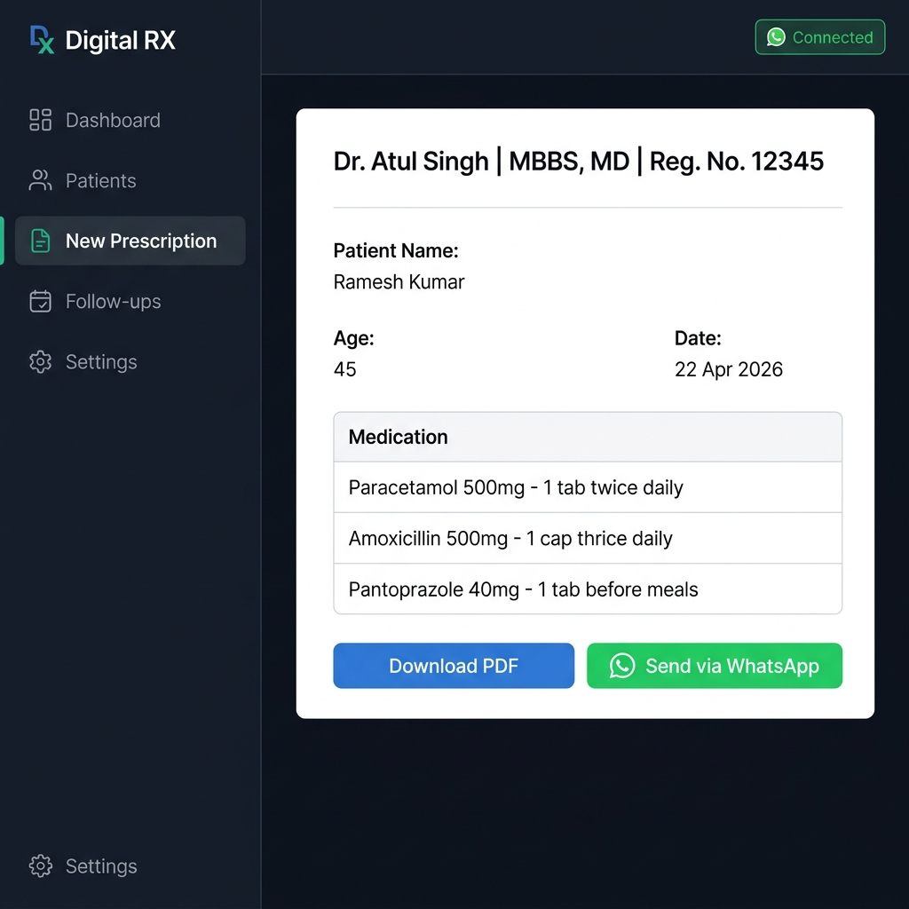

An offline-first clinic management app that lets doctors create NMC-compliant prescriptions and silently deliver them to patients via WhatsApp — eliminating paperwork entirely.

Indian doctors in small and mid-level clinics still rely on handwritten prescriptions. This creates three painful problems: illegible handwriting leads to dispensing errors, no digital record means patient history is untracked, and missed follow-ups result in incomplete treatment compliance.
Existing EMR software is either too expensive, too complex, or requires constant internet — making them impractical for a busy solo practitioner.
I designed and built Digital RX — a fully offline-first PWA using
React + Vite that requires no database server. All patient data lives in the browser's
localStorage, making it instantly available with zero setup.
The killer feature: a custom Node.js + Express backend that integrates Baileys (a lightweight WebSocket-based WhatsApp library) to silently send prescription PDFs directly to the patient's WhatsApp number — no manual copy-pasting, no third-party messaging service, no per-message fees.
localStorage over a cloud database
deliberately. Most clinics run on a single device (a doctor's laptop or desktop). Removing the
database dependency means zero monthly hosting costs, instant startup, and full offline
functionality — the app works even when the internet is down.
Challenge: WhatsApp Session Persistence
The Baileys WhatsApp session token would expire silently, requiring the doctor to re-scan the QR
code — often mid-consultation, causing frustration.
Solution: I implemented a real-time QR freshness timer (a green banner counting down seconds) and a Force Restart button that wipes the stale session and generates a fresh QR instantly. Session credentials are now persisted to disk, so most reconnections happen automatically.
Challenge: Electron + Baileys Packaging
Baileys uses native Node.js modules (like bufferutil) that webpack/Vite refused to
bundle for Electron — causing blank screens in the packaged .exe.
Solution: I split the architecture: Electron runs the Express/Baileys backend as a child_process on a dynamic port, and the Electron renderer loads the Vite frontend separately. This clean separation resolved all native module conflicts.
Challenge: Mobile-Responsive UI for a Clinic Setting
The app was designed desktop-first, but doctors in some clinics use tablets during rounds.
Solution: Refactored layouts to CSS Grid + card-based views, added a hamburger navigation for smaller screens, and ensured all prescription actions (send, download) were easily thumb-reachable on a 10" tablet.
Digital RX reduces the average prescription workflow from ~8 minutes (handwritten + photo + WhatsApp manual send) to under 90 seconds — a medicine is selected and a PDF lands in the patient's WhatsApp before they leave the clinic room.
This project deepened my expertise in full-stack offline architecture, WebSocket-based third-party integrations, and Electron desktop app packaging — a rare combination that spans both web and systems-level engineering.
1234 to log in and explore the interface.